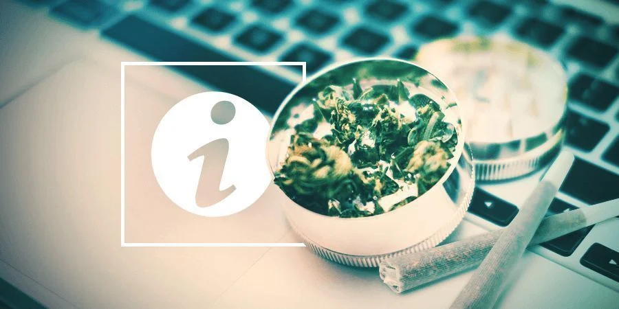

Cultiver du cannabis
Bien que la culture de cannabis ne soit pas très difficile, on n’en
devient pas un expert du jour au lendemain. Si vous êtes débutant en la matière, vous avez sûrement
plein de questions en tête. Pareillement, si vous cultivez du cannabis depuis quelque temps maintenant
et que vous souhaitez passer à l’étape supérieure, connaître toutes les méthodes avancées sera sûrement pratique.
Notre Guide de Culture du Cannabis est conçu pour être une ressource à laquelle se
référer pour les cultivateurs aussi bien amateurs que chevronnés. Ceux qui sont nouveaux dans cette pratique
peuvent apprendre à mettre en place leur espace efficacement, alors que ceux chevronnés trouveront des astuces et
des conseils pour maximiser leur installation. Nous avons absolument tout abordé, que ce soit les informations de
base sur la marijuana à des guides étape par étape pour la culture en extérieur ou intérieur,
ainsi que l’entretien des plants, les techniques avancées et bien plus encore.
Pourquoi Cultiver Votre Propre Cannabis ?
Le cannabis n’est plus un sujet aussi controversé qu’autrefois.
Grâce aux lois de plus en plus laxistes et à l’acceptation grandissante du cannabis dans les consciences, les banques
de graines et les boutiques de culture peuvent désormais être trouvées dans diverses régions du globe, ainsi qu’en
ligne. Les jardiniers de passion ont un accès simplifié à pléthore de graines de cannabis et à tous les outils
nécessaires pour cultiver des plants robustes et recouverts de têtes.
Hormis un accès accru et des lois moins sévères, il y a bien d’autres raisons de cultiver vos propres
plants de cannabis.
Vous Économisez De L’argent
Vous pouvez économiser pas mal d’argent en cultivant vous-même votre ganja! Oui, cela prendra plus
de temps que d’acheter au mec douteux au coin de la rue, et oui, il y a certains frais à avancer pour
créer votre espace, mais vous rentabiliserez rapidement vos dépenses initiales avec une montagne de têtes
de haute qualité. Que vous soyez un fumeur commun dit « récréatif» ou un consommateur holistique, quelques
petits plants suffiront
amplement à obtenir une réserve conséquente qui durera multiples mois.

Vous Savez Exactement Ce Que Vous Consommez
Chez soi, on peut cultiver des variétés avec les saveurs et les effets que l’on désire le plus.
Quand on achète à la volée dans la rue, c’est une tout autre histoire.
Même lorsque l’on achète dans un dispensaire ou un coffeeshop, on n’a pas toujours accès aux informations
de ce qui a été utilisé pour cultiver la variété (pesticides, produits chimiques, etc.) ou comment les
têtes ont été manipulées. Pas d’inquiétudes de la sorte avec une culture maison.
Vous contrôlez l’intégralité du processus, de la plantation de vos graines à l’affinage et au stockage
des fruits de votre labeur. Envie de cultiver en organique, ou préférez-vous viser un maximum de têtes à
récolter ? En cultivant chez vous, le pouvoir décisionnel est entre vos mains!
C’est Facile
La weed s’appelle « weed» pour une raison. C’est une plante qui n’est pas particulièrement difficile à cultiver.
En fait, certaines variétés sont particulièrement simples et nécessitent peu d’entretien, ce qui les rend excellentes
pour ceux qui veulent débuter dans l'aventure cannabique, mais qui ne savent pas comment l'aborder. Si vous faites
des recherches au préalable, vous pouvez découvrir quelles variétés conviendraient le mieux à votre niveau
d’expérience, le climat, votre budget, etc.
Ne vous inquiétez pas : il y a une variété pour chacun d’entre nous!
C’est Amusant!
On peut penser au fameux adage de Buddha qui disait : « Le chemin est l’objectif». Ou, en d’autres termes,
cultiver de la weed soi-même est un passe-temps intéressant, épanouissant et surtout amusant. Vous débloquerez
de nouvelles connaissances, que ce soit les particularités de chaque variété à la réalisation de vos propres mélanges
pour terre ou d’engraissage. Allez, vous pouvez même aller jusqu’à apprendre à
sélectionner vos propres variétés si
vous le souhaitez. Et tout ça, ce n’est que la face visible de l’iceberg.
Cultiver de la marijuana est un hobby excitant, gratifiant, relaxant, voire méditatif!